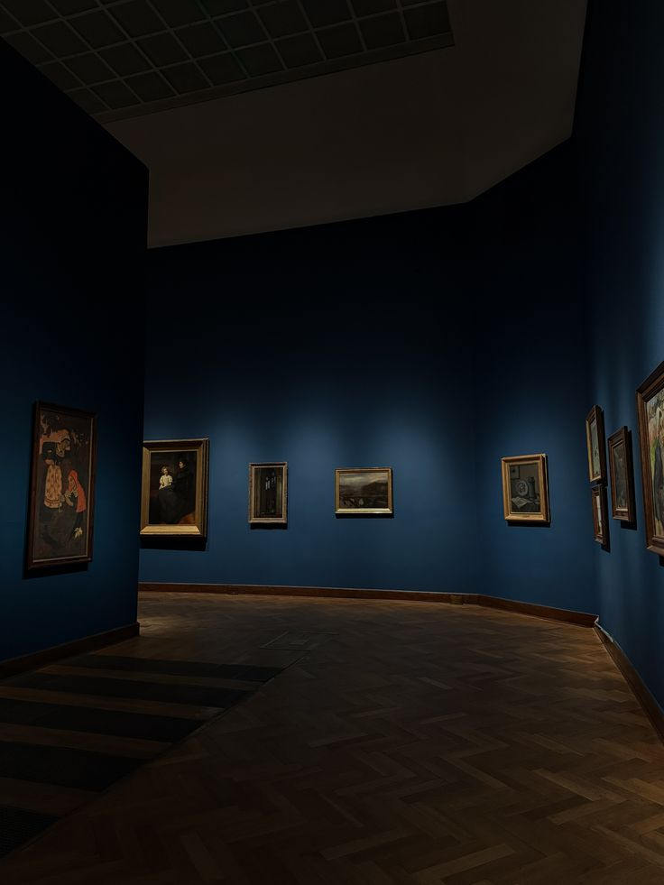

FINAL TERMINAL OUTPUT
Where Art
Meets Design
A collection of visual studies in photography, branding, architecture, and cultural heritage — exploring how design can express identity, tell stories, and connect creativity with everyday life.
Enter the exhibitionTHE IDEA
Design is more than appearance.
It is a way of seeing and understanding the world.
10/06/2026 — PHOTOGRAPHY
Gallery Walk
Six small studies of composition. Each photograph explores a different principle of design through one familiar object.
09/19/2026 — BRAND IDENTITY
Milestone 1: Artistic Expression
A classy beverage brand identity built around a confident blue palette and a consistent visual language.
THE PROJECT
A visual identity
with flow.
POURJ explores how consistent colors, typography, and logo design can create a recognizable brand. The project applies the principles of design to create a cohesive and classy visual identity.
The identity can extend across the logo, typography, business cards, packaging, signage, and promotional materials.
10/10/2026 — BUILT ENVIRONMENTS
Milestone 2: Modern Media & Design
A visual comparison of the Bahay Kubo and the modern house, looking at how materials and design respond to daily life and climate.
A CLOSER LOOK
Tradition and
modern living.
Different materials and building methods can offer different strengths. These general comparisons show how design choices relate to place, comfort, and resources.
CONNECTED TO SDG 11 · SUSTAINABLE CITIES AND COMMUNITIES
“Traditional Filipino architecture offers useful lessons for comfortable and environmentally responsive modern design. By combining traditional knowledge with modern technology, we can create spaces that respect culture while meeting present-day needs.”
04 — PLACE & MEMORY
Local Cultural Heritage
Every place holds stories. This space is reserved for a local heritage feature selected by the artist.
CULTURAL HERITAGE
BANAUE RICE TERRACES: A Living Cultural Landscape
Background
The Rice Terraces of the Philippine Cordilleras are located in the mountainous province of Ifugao in northern Luzon, Philippines. These terraces were developed by the Ifugao people over many generations, using traditional knowledge to shape rice fields along steep mountain slopes. The system includes terraced fields, irrigation channels, forests, and traditional settlements. The property was inscribed on the UNESCO World Heritage List in 1995.
Cultural or Historical Significance
The rice terraces represent the cultural identity, agricultural knowledge, and community cooperation of the Ifugao people. They demonstrate how generations of farmers developed ways to cultivate rice while adapting to the natural environment. Their continued maintenance also reflects the importance of passing traditional knowledge from elders to younger generations. Today, the terraces remain a living cultural landscape, although climate change, water shortages, and the declining agricultural workforce create challenges for their preservation.
Connection to Design
The Ifugao Rice Terraces show how design can work with nature rather than against it. Their layered forms follow the natural contours of the mountains, creating rhythm, repetition, balance, and visual harmony. Stone and earth terrace walls, carefully managed water channels, and the arrangement of fields demonstrate how materials, structure, and function can work together. For this exhibition, the terraces inspire us to appreciate sustainable design, local knowledge, and the relationship between cultural identity and the environment.
05 — AN INVITATION TO ACT
PAMANA: HERITAGE ADVOCACY
Keep the Terraces Alive: Preserving the Ifugao Rice Terraces
Cultural heritage is not only something we look back on. It can also help us imagine more thoughtful places for the future.
Why this heritage matters?
The Ifugao Rice Terraces are more than a beautiful landscape. They represent generations of Indigenous knowledge, traditional farming, engineering, and cooperation between communities and nature. Recognized as a UNESCO World Heritage Site in 1995, the terraces reflect the cultural identity and ancestral knowledge of the Ifugao people. They continue to be a living heritage because farming practices and community traditions remain connected to the land.
What threatens this heritage?
Despite their importance, the terraces face several challenges. Climate change affects rainfall and water sources, while extreme weather can damage terrace walls and irrigation systems. The movement of younger people away from farming communities also reduces the number of people available to maintain the terraces and pass on traditional knowledge. Economic difficulties make it harder for farming families to continue their work. These problems threaten not only the landscape but also the traditions and livelihoods connected to it.
Our Proposed Action
Through PAMANA, we propose an Art for Heritage Awareness Campaign that uses digital art, photography, storytelling, and social media to encourage people to care about the Ifugao Rice Terraces. Students, artists, and creative communities can produce educational posters, short videos, digital illustrations, and online exhibits that explain the terraces' cultural importance and the challenges they face. The campaign can also promote responsible tourism and encourage support for community-led heritage activities. Where possible, schools and creative organizations can collaborate with Ifugao cultural workers and local organizations to ensure that the stories are accurate, respectful, and guided by the people whose heritage is being represented.
07 — YOUR IMPRESSION
Leave a little
reflection.
Every visitor sees an exhibition differently. Share what stood out to you, or leave a short message for the artist.
This feedback form is a project demonstration. It does not send or store responses online.